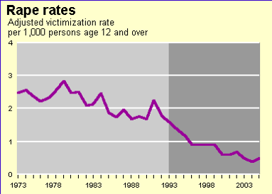

Amsterdam, the largest city in the Netherlands and once a mecca for those interested in pot and prostitution, is in the process of criminalizing men approaching women. Though the Netherlands has enjoyed a reputation as a liberal country sans the SJW extremism of Scandinavia, this might be about to change.
The new laws in Amsterdam are aimed at male actions that “frighten” women, according to one of the lawmakers responsible. This kind of highly subjective test, in an age where women write 2,000 word diatribes on “manspreading” on public transportation, is ripe for abuse and overuse.
In Rotterdam, the Netherlands’ second city, large fines and even jail time await a man who cat-calls or “bothers a woman in any way.” The test is also painfully subjective and shows no indication that it will rely on proper evidence, only the he-said-she-said calculations already capable of sending men to prison for decades after poorly-argued rape allegations.
As I brought you last year, the English city of Nottingham now defines unwanted male approaches of women as a “hate crime.” Expect many more cities, if not entire legal jurisdictions, to follow suit. Totalitarian lawmakers will use different words and legal formulas to criminalize men approaching women, but the intentions and many of the pernicious results will be the same.
Feels above evidence
“And then a guy on the street who wasn’t Brad Pitt said, ‘Your dress looks nice.'”
Well before the latest developments in Amsterdam and Rotterdam, Return Of Kings has repeatedly poked holes in the idea that women are ubiquitously harassed, not to mention sexually assaulted, in public. Given the prevalence of CCTV surveillance in the West, most especially in the United Kingdom, we have criticized a complete paucity of objective evidence demonstrating either street harassment or sexual assault.
At best, the approach bans being implemented in Nottingham, Amsterdam, and other cities are the result on largely self-serving anecdotal evidence, which conveniently portray female complainants as the subject of constant sexual desire on the part of men.
In London, for example, the realization of one aging Game Of Thrones actress, Souad Faress, that she had hit the wall–one far older, higher, and stronger than the one manned by the Night’s Watch–probably led to the most ridiculous false rape accusation of all time. Just as we want economic forecasts to be based on verifiable proof, so, too, must we have hard data on the level of supposed street harassment.
An issue we’ve always covered
We’ve been saying time is running out for men approaching women in public for years.
My coverage of the Nottingham debacle, part of a wider virtue-signaling operation being orchestrated by politicized UK police chiefs, was preceded by Tuthmosis Sonofra’s eery prescience about the future of approaching women in public:
…soon this time-honored way of meeting a complete stranger… will be illegal.
This year, Beau Albrecht continued our critical inquiry. He pointed out the spectacular incongruence of women expecting men to “man up” and approach first, all while castigating undesired suitors for being so-called “street harassers.”
To be frank, we’re tired of being right. Defenders of the draconian Nottingham move said that wolf-whistling would not become a hate crime. Even if we significantly doubt this, Rotterdam’s legislation has gone one step further and banned cat-calling itself. It’s only a matter of time before other vague but still menacing feminist laws become specific and even more menacing ones.
Every man is a potential target
Even for seasoned students (and teachers) of game, not every approach leads to a number or date, let alone some bed-warming soon after. And the more experience you accumulate, the higher the quality of women you tend to pursue, whether in Amsterdam, Nottingham, or New York City. This in itself can lead to frequent enough rejections, as can the fact that many women are taken (without you realizing it) or simply in a bad mood. You reject some women and some women reject you. It’s a part of life.
Yet plans like the Amsterdam and Rotterdam ones should cause significant concern for two reasons. The first is evident–who proves whether street harassment took place? Secondly, a massive conflation is at play here. “Unwanted” communication, which can include compliments and date requests, is progressively being equated with instances of actual violence, right up to rape.
Having tight game will only take you so far. Just as your tight game won’t cure the sluttiness drive of women you encounter, it will not always insulate you from shady, concocted claims of street harassment. It didn’t insulate Donald Trump or even Dutch football star Robin van Persie, who found himself held in jail for two weeks after a false rape accusation, from allegations of misbehavior. If you think you can always escape what these men didn’t, you should be teaching the rest of us.
The proposals show how rare actual rape and sexual assault is

Recent migrant crises are likely to significantly alter violent crime rates, but the general trend has been downward for years.
That the police in a place like Rotterdam will have to chase men who cat-call is a testament to the fact that rape has fallen to historic lows across the Western world, at least prior to the present migrant crises. If we truly were experiencing a “rape culture,” cat-calling would be an issue the authorities would just have to ignore until actual rape numbers were eliminated or at a minimum brought under control.
The Amsterdam move is similarly illuminating in that:
Perpetrators would be tracked, possibly by using plain clothes police officers, he said. Cameras should be installed in places where there are a lot of problems and extra police checks carried out.
I generally agree with the installation of cameras, despite the risk that one recorded incident will be presented as “proof” of an epidemic of men saying highly sexual things like, “Nice shoes, baby.” What is confounding, however, are the resources evidently at the disposal of local police.
Amsterdam is home to many universities, which are, like in the United States, designated as rape hotspots by feminists and SJWs. Why are lawmakers prioritizing a cat-calling plague in Rotterdam or a “he’s talking to me” plague in Amsterdam when their ideological bedmates are simultaneously alleging a plague of rape?
In the age of cell phone cameras, where are all the videos of this outlawed “harassment” taking place?
I think I’ve seen about 25 videos of wandering cats in Amsterdam over the last several years, uploaded by zealous Instagram, Snapchat, and Facebook sharers. Where are all the street harassment ones? There are far more Dutch cats online than cat-calling instances or things far worse than cat-calling.
Because advocates of the new laws report more salient problems in crowded areas like red light districts and nightclub precincts, we should be seeing firsthand, objective evidence of these harassment incidents all the time. In fact, an inundation of them should have arrived already. But no, we have nothing.
Moreover, if these incidents were regularly recorded, it would almost certainly highlight the triviality of most of them and how the proposals in Amsterdam and Rotterdam are nothing short of leftist overreach presenting normal male behavior as rape-like.
How many of the real street harassers are recent migrants?

Proponents of real street harassment in the Netherlands.
My final question is one very few people in the Netherlands seemingly want to answer, either for ideological reasons or for fear of speaking out and perhaps even being prosecuted like Dutch politician Geert Wilders. Like in Scandinavia and Germany, migrant populations, including those whose large communities were established since the 1970s, have an abysmal rate of incarceration for serious crimes in the Netherlands.
Rates of antisocial behavior and true sexual harassment towards women are much lower than feminists and cucked politicians claim. Nevertheless, any unacceptable actions are disproportionately committed by non-European Dutch residents.
Moroccans are a noted troublesome group. They account for 2.2% of Dutch people, but comprise 11% of the prison population. Around 48% of incarcerated felons come from non-Western backgrounds and they are more likely to be the perpetrators of violent crimes. In bigger cities like Amsterdam and Rotterdam, indigenous Dutch and even Europeans generally tend to form minorities in many districts.
Consequently, the leftist commitment to an anti-male but pro-mass migration agenda means that men with no inclination for crime will be unfairly labeled as sex pests for having the balls to approach attractive women in public.
Read More: British Police: Men Who Try To Get Laid Are Guilty Of Misogynistic “Hate Crimes”